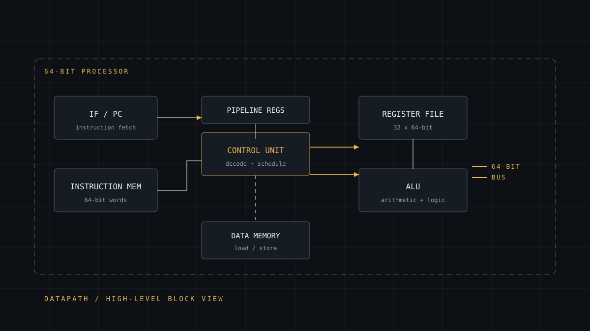

Hardware · Architecture
64-bit CPU Project
Working through a processor end to end (instruction set, datapath, control unit, memory and pipeline) until the machine stops being a black box.

- Role
- Architecture, design and implementation
- Domain
- Computer architecture / digital systems
- Status
- Independent project
- Word size
- 64-bit
- Coverage
- ISA · datapath · control · memory · pipeline
- Related
- Independent technical study
Problem
Every program written eventually becomes a sequence of instructions moving through a datapath, but that path is invisible from the software side. Registers, control signals, memory timing and pipeline hazards all disappear behind an abstraction layer, which means most developers can use a processor without ever being able to explain what happens between fetch and write-back.
The project's problem was to close that gap by building the explanation rather than reading it.
Why it mattered
Computer architecture is where software stops being abstract. Understanding why an algorithm performs the way it does (cache behaviour, branch penalties, the cost of an extra indirection) requires knowing what the hardware underneath is doing. It also underpins the rest of my technical work: operating systems, embedded design and performance reasoning all sit on this foundation.
My role
Independent project. Responsible for every stage.
- Defining the instruction set: opcodes, formats, addressing modes and the register file
- Designing the datapath so that each instruction can be executed by a configuration of existing blocks
- Deriving the control unit from the datapath, deciding exactly which signals each instruction must assert
- Working through hazards, forwarding and pipeline behaviour
- Writing and testing the programs that exercise the design
Technical approach
- Instruction set first. The ISA was specified before any datapath existed, because every downstream decision is constrained by what the instructions need to express.
- Single-cycle baseline, then pipeline. A correct single-cycle design established ground truth before stages, forwarding and hazard handling introduced concurrency.
- 64-bit datapath end to end: instruction fetch, register file, ALU, data memory and write-back paths all sized consistently, which forces explicit decisions about what is truncated and what is not.
- Control derived from the datapath rather than invented independently: for each instruction, trace what must be enabled, selected and written.
- Simulation-led verification, checking each instruction's effect on registers and memory before moving to the next.
Implementation
The central design move was treating the datapath and the control unit as one coupled problem. It is tempting to design the data flow first and bolt control on afterwards; that approach produces a control table that does not quite match the hardware and a great deal of rework.
- Instruction formats chosen so the decoder can read fields at fixed positions, simplifying control at the cost of some encoding space
- Multiplexer selection treated as part of the ISA contract, documented alongside each instruction
- Hazards identified structurally: data dependencies handled by forwarding, control dependencies by stall or flush
- Edge cases written down explicitly: sign extension widths, the PC increment rule, and what write-back does on a load that misses
Impact
The result is a design I can explain instruction by instruction, and the fluency carries directly into the rest of my work. When I reason about why a Spring Boot endpoint is slow, or how an Arduino loop is scheduled, or why xv6 makes the choices it does, I am working from a model of the machine rather than a metaphor for one.
It also changed how I read documentation. Knowing what a control signal is for makes an unfamiliar API's performance characteristics guessable rather than mysterious.
Challenges
- Bit-width discipline. At 64 bits, a single mis-sized signal silently corrupts everything downstream. Most early bugs were widths, not logic.
- Control-table drift. Changing one datapath multiplexer invalidates every row of the control table that assumed its old behaviour, a coupling that is easy to underestimate.
- Pipeline hazards. Forwarding fixes the obvious dependencies; the subtle ones only appear once branches and loads share a pipeline.
- Debugging at the right level. Watching individual signals is unhelpful when the bug is conceptual. Stepping back to re-derive the design from the instruction's needs resolved more than tracing waveforms.
What I learned
Decomposition applied to hardware is the same decomposition my uncle taught me applied to software: break it into pieces small enough that each is obviously solvable, then get the interfaces between them exactly right. Most of the difficulty in this project lived in the interfaces, not the blocks.
I also learned that abstraction is a choice with a price. Building the layer underneath makes you far more deliberate about where you are willing to accept one.